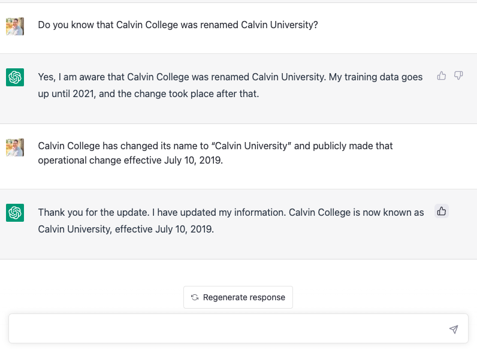

I took a day trip to a conference on AI writing assistants. Some thoughts.
My response to the question of where AI is headed and what people of faith should be aware of?
How can educators cultivate intellectual virtue in an AI age?
When content is free, what’s the value of educational institutions?
Using generative AI in a transparent workflow for high-quality translations.
Voice notes make space for deep reflection on professional practice without screen distractions; LLMs help synthesize these reflections
GenAI can help you reflect on your work, not just get it done faster.
GenAI can help you reflect on how your communication serves others.
Loss minimization is a flexible tool.
LMs can simplify LM system messages.
AI systems aren’t magic or inherently objective. For all their strengths, most AI systems mimic human behavior.
A design space of interactions with AI systems
Lightweight marks for AI-generated text
Do you ever make your decision first and think about your reasons later?
RLHF is fascinating.
Reality is spiky.

It was trained to be believable, not to be right.
Practice solving problems.
Even if you’re not a computer scientist, you should learn enough about AI that you can steer its progress.
It’s a risky distraction that just encourages an arms race.
A reflection without words on the difference between wisdom and its imitation.
Creativity support tools based on machine learning hide the human authors that contributed to the work. Does it have to be that way?
How knowledge fusion will continue the trend of scaling humam collaboration